About Me
Hello! I'm Jackie
I would describe myself as a developer who really cares about user experience.
Explore more about me by clicking the buttons above!
Education
Bachelor of Information Technology in Interactive Multimedia and Design (BIT)
Minor in Computer Science at Carleton University
Expected Graduation: April 2018
Experience
Frontend Developer Intern
May - August 2017
Software Devleoper
September - December 2016
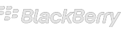
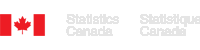
Multimedia Developer
May - August 2016
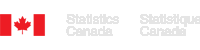
User Experience Team
May - August 2015
Hackathons
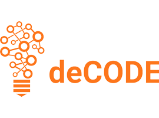
deCODE Ottawa 2017
United Nations Goal 14 - Qlik Challenge
Visualize the commitments that various countries made in accordance to the United Nations SDG 14 #saveourocean movement using the Qlik API.
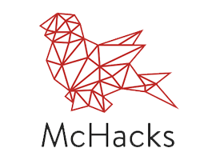
McMaster Hackathon
Jukebot
Juke Bot is a messenger chat bot that allows people to create collaborative playlists on the fly. We wanted to create something fun and social by bringing people together over music.
deCODE Ottawa 2016
Fokmoji - Foko Challenge
An application that gives the user the ability to overlay an emoji on a person’s face based on a person’s facial expression. You can use Fokmoji on the web, mobile (Android and iOS) and you can share your emojified picture on slack.
Recent Projects
PERFIT is a sizing and visualization tool for online shopping (under development)
Bevy Band is a breathalyzer bracelet paired with an Android application
I would love to hear from you!
jackie.ellis@hotmail.com
I am currently looking for a full time position for May 2018
Bevy Band
Breathalyzer Bracelet
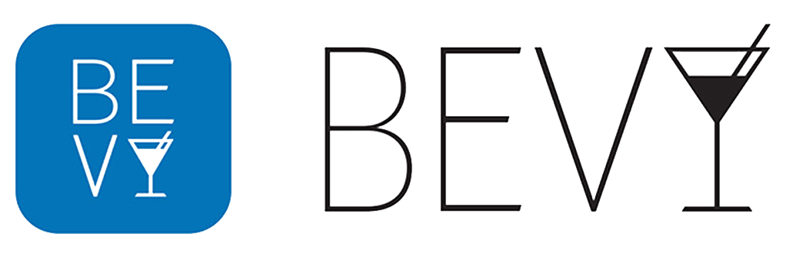What is Bevy Band?
Nearly 10,000 people die annually because of drunk drivers and over 2,000 people die from alcohol poisoning in the US alone. Our product’s purpose is to decrease the amount of drunk drivers and to act as a tool for increasing responsible drinking. Our intention is to allow users to track their blood alcohol content (BAC) throughout their night. Users will also be able to see their friends blood alcohol levels to help look out for one another. By having this interactivity amongst a group, the intention is for your friends to look at your alcohol level and be able to alert you when or before you’ve had too much to drink and vice versa. Our product will consist of a wearable breathalyzer with an “At Glance” screen, and an Android Mobile Application where all information will be viewed and stored.
How?
The two components of Bevy Band are the breathalyzer bracelet and an Android phone to run the Bevy Band app. This is illustrated below.
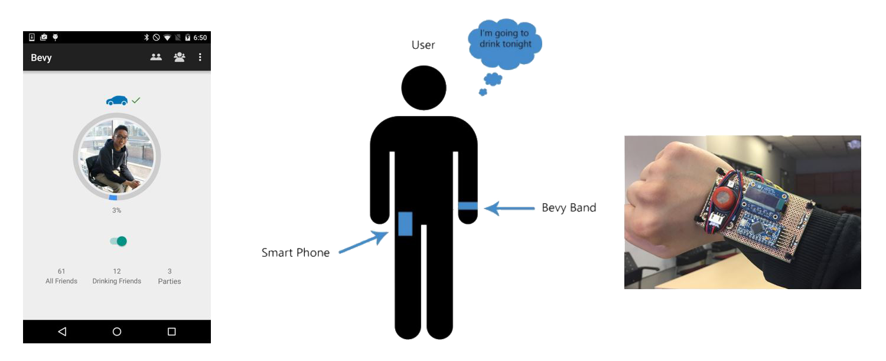The development tools included the following:
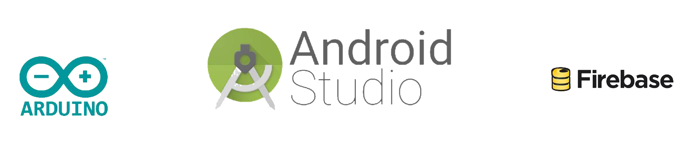The Adruino IDE was used to develop the software on the bracelet that we build out of Arduino parts and an Arduino Mini Pro board. Android Studio was used to build the Android App that connected to the bracelet through Bluetooth. Lastly, Firebase was used as a development helper - mostly to be able to log in with Facebook and connect with friends.
User Testing
Drinking Habit Survey
The first user test was an online survey. We had 65 users respond and compiled the results which can be seen below:

Paper Prototype
The second user test was a paper prototype to test the flow of user interaction with the app. This allowed us to refine the main interactions on the application and test our design.
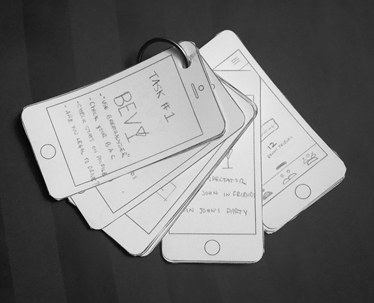Medium Fidelity Prototype
The next user test let us test the functionality of the application using an android device. A link to the medium fidelity prototype can be found below. It was made using InVision and let us find problem areas before creating the app.
Link to Medium Fidelity PrototypeFinal Product
The video below shows the final product. We accomplished building a bracelet that is small and compact and we have the base functionality of the application working. This means communication between the bracelet and the application works as well as logging in with different Facebook profiles. There is still a lot of functionalities and design elements that we would like to improve and may continue working on this in the future.
Bracelet
The bracelet went through many iterations. The bracelet has the breathalyzer (gas sensor), a Bluetooth chip and an OLED screen The final bracelet is shown below:
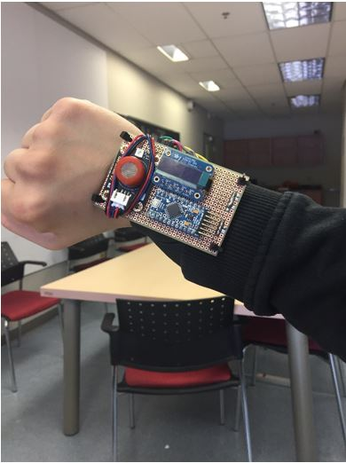Application
The app also went through many iterations. It does not match the original design because we focused on functionality with the time we had. We hope to improve the design and add the rest of the missing functionalities. The final app user profile is shown below:

Progress Website
Throughout the development of the app and bracelet we tracked our progress using a wordpress website. Each week has a short update that explains what we were doing that week.
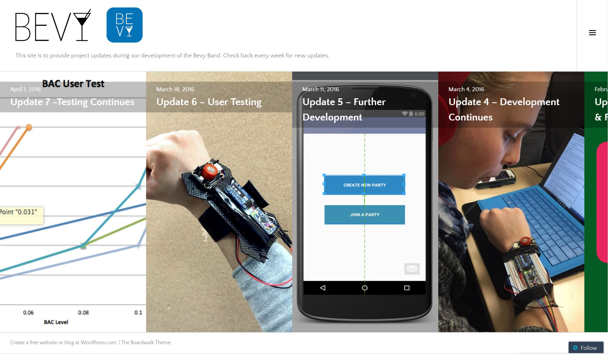 http://www.thebevyband.wordpress.com